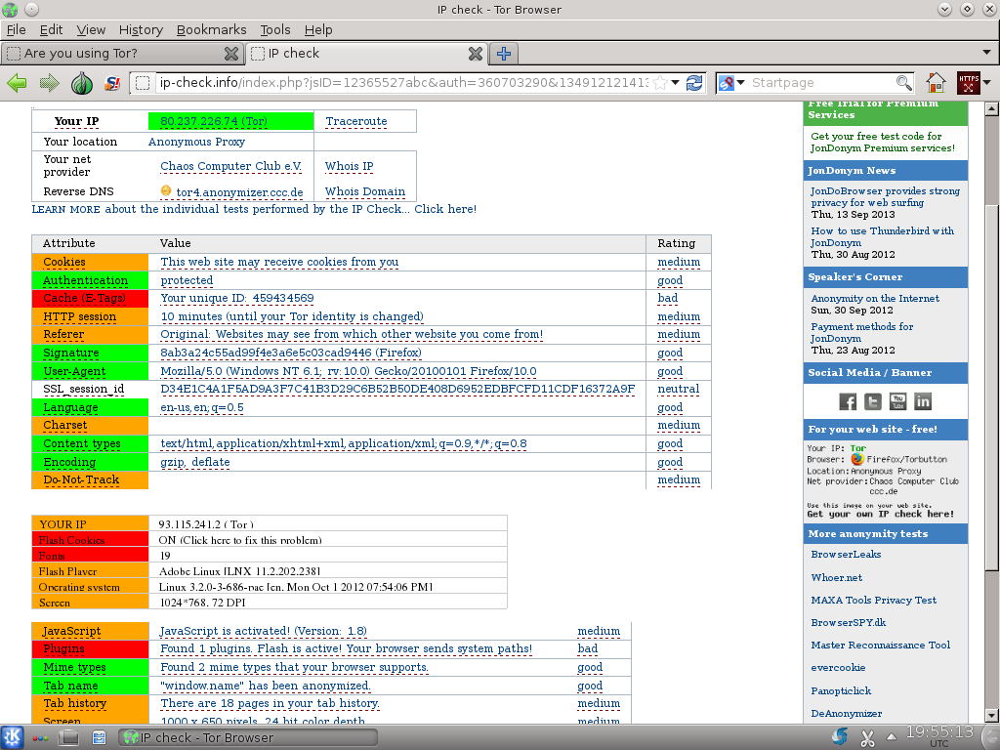

No IP leaks! Anonymous Flash plugin. Anonymously using Adobe Flash or other browser plugins with Tor in the Whonix Anonymous Operating System.
Introduction
The risks of browser plugins like (now deprecated) Flash are explained below. Alternatives are discussed, along with steps on how to use browser plugins anyway in the most secure manner possible.
For information about Tor Browser in general, see Tor Browser.
Plugin Warnings
Introduction
 Some popular plugins are non-free, closed source software! See Warning, Avoid
non-Free Software before proceeding, particularly if the browser
plugin is Free Software before using it.
Some popular plugins are non-free, closed source software! See Warning, Avoid
non-Free Software before proceeding, particularly if the browser
plugin is Free Software before using it.
The Whonix Features chapter states:
Java, JavaScript, Flash, browser plugins and mis-configured applications cannot leak the user's real external IP address.
This is still not recommended as they may decrease anonymity (e.g. Flash cookies) and they often have security vulnerabilities. Also some popular plugins are closed source; see Security in real world. Although unrecommended, the knowledge of how to use browser plugins is not withheld from the reader.
IP leaks are not easily possible; see Attack on Whonix and/or Design for details on how much effort would be needed.
The primary browser plugins concerns are:
- Non-Free Software: -- see the warning box above.
- Linkability: browser plugin use can be probably correlated to the same pseudonym. [1]
- Fingerprinting: browser plugins most probably leak a lot of information about the (virtual) operating system (Whonix-Workstation™).
- Security: some plugins have a history of remote exploits. In more precise terms, the risk of a virtual operating system being infected by trojan horses or other malware is higher.
Always look for safer alternatives before utilizing a browser plugin (see below). However, if browser plugins are used then an isolating/transparent proxy like Whonix is probably the safest option. [1]
Avoid Browser Plugins
Avoiding browser plugins is better than using them. There are various alternatives to browser plugins, although most of the workarounds are not a complete, perfect drop-in replacement. Alternatives that may work sufficiently -- for example, if you only need YouTube -- include HTML5, gnash, Flash video replacer, Flash video download, or using a flash video download and convert online service. Applications worth exploring include youtuberipper, ClipGrab, minitube, Totem with totem-plugins-extra, and so on. Discussing Flash alternatives in detail is beyond the scope of Whonix.
The Tails team has prepared a good list of Flash alternatives, see Tails Flash support. Note that Flash has been officially deprecated in Firefox; see below for further details.
Avoid Non-Free Plugins
 Avoid non-free, closed source software! Be sure to read the warnings
above first!
Avoid non-free, closed source software! Be sure to read the warnings
above first!
If you insist on using browser plugins anyway, it is still possible to install new software [2] in Whonix-Workstation. It is probably safest to use Tor Browser for this purpose. JDownloader is a Libre alternative to Flash for downloading videos for local viewing. [3]
Although your IP/location will remain hidden the plugin usage should be considered pseudonymous rather than anonymous. It is recommended to read this entire chapter, as this summary does not include all security considerations.
Be aware if plugins are used, it is likely the exit relay and the exit relay's ISP and website will know you are a Whonix user. [4] [5] [6]
Flash Player Deprecation
Flash Player was deprecated by Firefox in 2020 and the Debian
flashplugin-nonfree package is no longer
available: [7]
Firefox ended support for Adobe Flash in Firefox at the end of 2020, as announced back in 2017. Adobe and other browsers also ended support for Flash at the end of 2020.
Firefox version 84 was the final version to support Flash. Firefox version 85 (released on January 26, 2021) shipped without Flash support, improving our performance and security. There is no setting to re-enable Flash support. ...
What if I still depend on Flash content?
For enterprise customers who need help transitioning Flash content to other supported technologies or require Flash Player licensing support after 2020, please contact Adobe's official distribution licensing partner, HARMAN, for more information about their commercial support offerings.
Emulators are still available to play Flash content if it is absolutely necessary.
How to Use Other Browser Plugins
Note that Tor Browser developers added a patch [8], which blocks all plugins except Flash. To use other plugins, read the advanced guide below.
Advanced Guide
If Tor Browser is not preferred, it is possible to install the mainstream Firefox or Chromium browsers. For a discussion about anonymity implications, see the "More Security" section below.
Install package(s) firefox-esr following these
instructions:
1 Platform specific notice.
- Non-Qubes-Whonix: No special notice.
- Qubes-Whonix: In Template.
2
 [Broken-ExtLink--no-url-was-provided].
[Broken-ExtLink--no-url-was-provided].
sudo apt update && sudo apt full-upgrade
3
Install the firefox-esr package(s).
Using apt command line
 [Broken-ExtLink--no-url-was-provided] is in most cases optional.
[Broken-ExtLink--no-url-was-provided] is in most cases optional.
sudo apt install --no-install-recommends firefox-esr
4 Platform specific notice.
- Non-Qubes-Whonix: No special notice.
- Qubes-Whonix: Shut down Template and restart App Qubes based on it
as per
 [Broken-ExtLink--no-url-was-provided].
[Broken-ExtLink--no-url-was-provided].
5 Done.
The procedure of installing package(s) firefox-esr is
complete.
Or Chromium.
Install package(s)
chromium-browser chromium-browser-l10n following these
instructions:
1 Platform specific notice.
- Non-Qubes-Whonix: No special notice.
- Qubes-Whonix: In Template.
2
 [Broken-ExtLink--no-url-was-provided].
[Broken-ExtLink--no-url-was-provided].
sudo apt update && sudo apt full-upgrade
3
Install the chromium-browser chromium-browser-l10n
package(s).
Using apt command line
 [Broken-ExtLink--no-url-was-provided] is in most cases optional.
[Broken-ExtLink--no-url-was-provided] is in most cases optional.
sudo apt install --no-install-recommends chromium-browser chromium-browser-l10n
4 Platform specific notice.
- Non-Qubes-Whonix: No special notice.
- Qubes-Whonix: Shut down Template and restart App Qubes based on it
as per
[Broken-ExtLink--no-url-was-provided].
5 Done.
The procedure of installing package(s)
chromium-browser chromium-browser-l10n is complete.
How to Use Browser Plugins: More Security
It is recommended to read the earlier instructions first, which are easier.
Deactivate Unneeded Browser Plugins
It is recommended to only activate plugins that are essential for
use. On most browsers there is a pseudo URL about:plugins which can be
accessed to check which plugins are activated.
Go to: Tor Browser -> Tools ->
Plugins and deactivate all plugins which are not needed. It
is even better to uninstall them.
Separate Tor Browser or Separate Whonix-Workstation Dedicated to Browser Plugins
For the best security use More than one Tor Browser behind a transparent or isolating proxy or even better, multiple VM snapshots or Multiple Whonix-Workstation.
SocksPort vs TransPort
Using the easy instructions in this chapter will cause Tor Browser to go through SocksPort and browser plugins to go through TransPort. It may or may not make sense to either force both through a SocksPort (difficult) or to force both through the TransPort; see footnotes for further details.
Footnotes
- For an overview about Flash Tracking Techniques and why Whonix users are much better off than users who run Tor and proxifiers and/or custom firewall rules, see: Flash / Browser Plugin Security.
- Read Install_Software
- https://gitlab.tails.boum.org/tails/tails/-/issues/5363
- Most "plugins over Tor" users probably use Mozilla Firefox and Flash on Microsoft Windows with a socksifier. They can be easily browser fingerprinted and probably even linked, see TorifyHOWTO/WebBrowsers and Tor Button FAQ.
- That is because very few people use Tor Browser with plugins, which
are routed through Tor. Also because Tor Browser was at Whonix build
time manually configured to use a Tor's SocksPort (for stream
isolation), while user-installed plugins will will be automatically
routed Tor's TransPort. The SocksPort and the TransPort will go through
different circuits and most times through different exit relays. That
probably differs from the rest of the "Plugins over Tor" users group.
For demonstration, see screenshot:

you'll see, that the Tor Browser and Flash have different Tor exit IP's. It is questionable if that particular difference could and should be fixed and if situation had improved afterwards. - See Change/Remove Proxy Settings for how to route Tor
Browser through Tor's TransPort. Then both, Tor Browser and plugins
would go through Tor's TransPort. This has been tested, see screenshot
 .
The question would be, if that would actually improve the situation
talked about in earlier footnotes. There are probably only a very few
using Tor Browser and plugins through the same circuit. (In a earlier
footnote, it was mentioned, that they are still using Mozilla Firefox,
even though that's even more discouraged.)
.
The question would be, if that would actually improve the situation
talked about in earlier footnotes. There are probably only a very few
using Tor Browser and plugins through the same circuit. (In a earlier
footnote, it was mentioned, that they are still using Mozilla Firefox,
even though that's even more discouraged.) - https://support.mozilla.org/en-US/kb/end-support-adobe-flash
- https://gitweb.torproject.org/torbrowser.git/tree/src/current-patches/firefox/0005-Block-all-plugins-except-flash.patch
- https://wiki.debian.org/Firefox
- It is also possible to install the latest Firefox version on Debian.
License
Gratitude is expressed to JonDos for permission to use material from their website. The "Restrict Flash Settings" chapter of the Whonix BrowserPlugins wiki page contains content from the JonDonym documentation How to anonymize Flash videos and applets page.